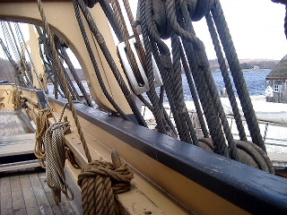
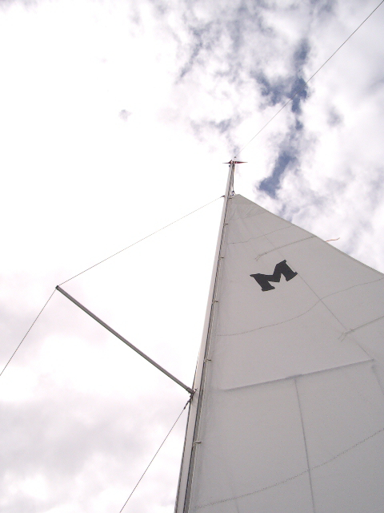

| Main | CB | FB | Fast | Size | Keel | Ballast | Point | Tall | Race | Lean | Ocean |
|
|
|
The opposite is true. But why is it important to discuss this mater. From the days of the square riggers, cruisers have known that it is best to sail with the wind. Most long range cruising is down wind and most coastal ocean cruising is on a beam reach. Denton Moore points out in his book that Gentlemen Never Sail to Weather. Sailing to weather means sailing to wind. But, if a strong wind kicked up and shore was leeward and close then pointing into the wind may become important in avoiding a grounding. Fortunately Mac26x vessels do this very well.
By sailing Genoa only and
drawing both Genoa sheets tight a Mac26x will self steer into weather.
(This is similar to "windward sheeting" which is used on Flying
Scot racing dinghies.) In
addition, most Mac26x cruisers have motors that, unlike the underpowered
motors in most sailboats, can actually help in this contrived situation.
"In light to moderate conditions (when power to carry sail is not an issue), a center boarder or lee boarder has the advantage of more efficient and lower-drag lateral plane. All else being similar, it will point and foot better than a deep keel-ballasted boat"  Do I understand the quote yet. No I don't. That is why I keep the WoodenBoat article with me. But I expect that it explains why Catalina 30 skippers back wind the jib while coming about where that trick is helpful only when racing a Mac26x. MacGregor Yachts claims that the Mac26x points better than any previously built sail boat that can be trailered (including presumably the old non X Mac26 boats). But Mac26 Classic owners debate this. I have finally decided that "pointing into the wind" and "racing into the wind" are two different things. "When racing, if the course is all to windward and the wind is strong and the boats are big enough to make live ballast a minor issue, an efficient deep-ballasted boat will win. The shoal-draft boat will hold her own reaching, and will outrun the deep boat off the wind by hauling up the board(s) to reduce wetted surface" according to Bolger and Altenburger.My need to separate "pointing into the wind" from "racing into the wind" stems from a desire to explain how a slow boat can some times out point a fast one. Diagrams from the chapter on maneuvering in Cruising Under Sail are used to conclude that the sheets of a yacht designed to be fast need to be hardened in more than those of a slow yacht on the same course. But I draw a different conclusion from the diagrams. For me they show that any yacht requires sufficient headway in order to point well into the wind. The faster the boat goes the better pointing possible. Hence, the vessel that can make headway will out point one unable to match. My conclusion explains why the light displacement vessel with little wetted surface, such a Mac26x, will outpoint a heavy displacement deep keel vessel when conditions are normal. It just takes less wind to reach the same MPH. Hiscock's statement that: "The usual fault the beginner makes when sailing close-hauled is to sheet his sails in too flat and then to point up to close to the wind, so that although his yacht may head in the desired direction she does not move fast enough through the water." is fully explained by my conclusion. A full sail is more powerful. The power makes the vessel go faster and the speed allows a closer pinch to the wind (better pointing). You make the sails fuller by easing the sheets. The most power comes from the larger sail which is the Genoa on the Mac26x. Hiscock was well aware that pointing into the wind requires knowledge specific to the craft and practice. I am practicing more rounded tacks where immediately after coming about I set course just outside of the no sail zone (a close reach). Only after gaining speed do I attempt to sail on the wind (close hauled). I have found that as long as Murrelet picks up speed (as measured by my GPS) I can pinch the wind even more.
 The wind being pinched is the apparent wind. True wind is the direction opposite to the direction a shore based flag or wind sock is pointing. When a boat picks up speed it creates its own wind which modifies the direction the wind seams to be coming from when measured from the deck of the boat making way. The combination of the wind created by making way and the true wind is the wind the boat sees or "apparent wind". This means that even when the true wind is constant, the wind important to sailing will be changing as the sail boat picks up or loses speed because the wind being made by making way is changing when the boat is accelerating or slowing.Understanding this apparent wind vs true wind business is said to be important in sailing well. But this really is only the case if the sailor is trying to use other sailboats in making decisions regarding pointing. It can be confusing; only the wind the boat sees is important in sailing well. The Mac26x crews that ignore what other boats are doing and have no more understanding of apparent vs true wind than how gravity works will do better in making way upwind than crews over thinking this wind apparant/truth business. But Mac26x cruisers, in spite of the manufacturer's claim of better pointing than any sailboat that can be trailered, are sometimes said to point less well than the Mac26 classics. So some thinking is fun in refuting that. Performance cruisers, such as Mac26x cruisers and modern style sailboats, tend to have less wetted-surface area (the part of the hull that is immersed in the water) when at a modest heal than cruisers that have a comparable waterline length, such as Mac26m and contemporary style sailboats. This is especially true when the performance cruiser's relatively high-aspect-ratio fin keel is lifting the vessel. The lifting is greatest the faster the performance cruiser goes and the fin keels are long to compensate for that lift which on its limit will contribute to leeway. The lift is not only upward - creating less wetted surface - but also pushes the boat to windward preventing leeway (also called crabbing). The above photo is the "hang glider" configuration for the Mac26x. This
is the easiest planing under sail configuration for the Mac26x and,
because the cruiser is fully ballasted, I
believe even a beginner can rig this configuration and plane the cruiser
in 10 to 15 MPH of true wind. The true wind is actually astern, but owing
to the combination of the wind the cruiser makes and the true wind the
wind indicator at the top of the mast points slightly forward of the beam.
No centerboard is used in the hang glider configuration which is lost when
pointing higher into the wind because the mainsail is no longer supported
by the vessels strut (aft pointing spreader).
On Mac26x sail boats, the long swing keel (also called centerboard) is hung in its trunk so that it will cock slightly to windward. This means that the vessel has a no sail zone starting at 32 rather than 45 - which is most common for sailing vessels. That is 32 degrees measuring wind from the deck of the vessel (IE measuring the wind the vessel sees.) However, if the wind direction is judged instead from a shore based flag tower it will look like the boat is pointing less well as the boat accelerates. You see this best when watching multi hulls and sailboards. Bottom line, if the sailor is making pointing decisions based on what some other boat is doing, the important observation is how fast is that other boat going, not what course is being taken. If that boat is already going faster, then matching the course and sail trim before gaining similar speed is a prescription for going slower. The above explains why a slow boat appears to point better than a fast one when judged from shore. The fastest boats will be falling off the wind judged from shore with each increase in speed. When trying to make an upwind mark, going slower may make unnecessary a tack and this strategy is helpfull if a hull must be dragged through the water while turning as is the case with catamarans and sailboards. With these craft, each tack comes at a large cost in speed and to gain that speed back the vessel must be light and sails powerfull with enough wind to carry them. On a hang glider, and any aircraft, pulling up makes the craft drop faster because the hull of the plane drags more through the air when the nose is up. Since pulling up is the natural tendency of a student pilot when trying to avoid a tree, those wishing to become pilots must be taught other ways to avoid the mark, like nosing down and applying power. I suspect it is the same in sailing. To make an upwind mark and avoid a speed halting tack, crew must think about slowing the sailboat. Dragging the X hull by putting more of the flat portion into the water does that. "falling into the mark" by coming off the optimum heel may be the prescription for winning a race in an X if a tack can be avoided. The next tab of this log is related. Tall masts are believed beneficial in pointing.
Frank & Lisa Mighetto - 1260 NE 69th St. Seattle, WA 98115 - (206) 525-1458 voice and fax mighetto@eskimo.com - Internet email address mighetto@compuserve.com - Internet email address or 72154,3467 from within Compuserve
|